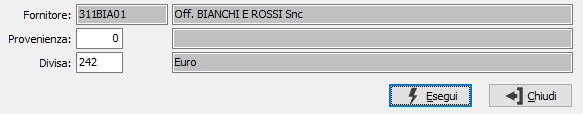
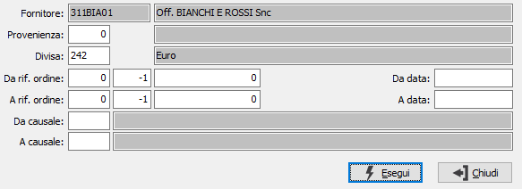
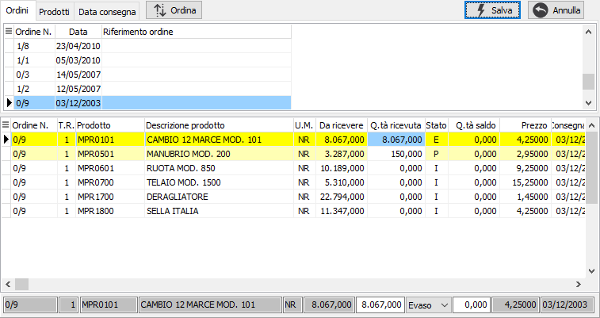
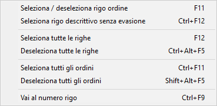
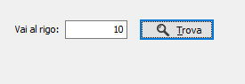
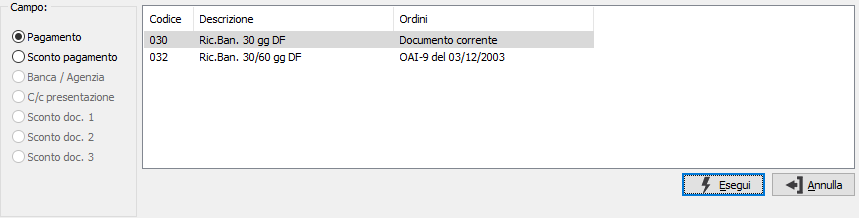

Evasione ordini
L'evasione degli ordini da parte dei documenti come Ddt e fatture ha come filtro sempre il codice del fornitore.
Se per lo stesso fornitore sono stati inseriti più ordini con divise diverse viene visualizzata una finestra che permette all'utente di specificare quali di questi ordini utilizzare per la selezione.

In questa finestra è possibile specificare una singola divisa da utilizzare per selezionare gli ordini del fornitore. Dopo aver inserito i criteri necessari e premuto il pulsante Esegui, gli ordini selezionati vengono visualizzati nella finestra di selezione.
Se in configurazione ordini è attivo il parametro "Richiesta criteri selezione in evasione" la finestra sarà la seguente, che include una serie di parametri aggiuntivi per affinare la ricerca degli ordini da evadere.

Nel caso in cui esistano ordini da evadere per il fornitore tutti con la stessa divisa viene direttamente richiamata la finestra di selezione.

La finestra è suddivisa in due sezioni.
Nella sezione superiore sono presenti i riferimenti agli ordini da evadere che possono essere ordinati e visualizzati per ordine, per prodotto oppure per data consegna. Selezionando un elemento in questa sezione, tramite il mouse o spostandosi con le frecce, nella parte sottostante vengono visualizzati i dettagli delle righe relative. Il pulsante Ordina, presente solo nella pagina Ordini, consente di modificare l'ordinamento crescente o decrescente dei dati della griglia superiore in base alla data del documento.
Nella sezione inferiore è possibile scegliere quali righe, e con quali quantità, inserire nel documento.

La selezione e l'annullamento della stessa può avvenire in diversi modi. Per selezionare oppure annullare la selezione ad un rigo è sufficiente fare doppio clic con il mouse sul rigo interessato (se selezionato verrà annullata la selezione altrimenti il contrario). È anche possibile utilizzare il menù indicato a lato (attivato tramite la pressione del tasto destro del mouse) oppure utilizzare gli appositi tasti funzione. È consentito selezionare o deselezionare un solo rigo, tutte le righe, un intero ordine oppure inserire manualmente la quantità nel pannello sottostante. È anche consentito selezionare righe descrittive senza che queste vengano evase al momento del salvataggio del documento.Se attiva la gestione del dettaglio quantità per il documento in evasione o per il documento che si sta compilando, in automatico al momento dell'accesso al campo quantità, sarà visualizzata la relativa finestra di dettaglio quantità.
Se un rigo viene evaso completamente lo sfondo appare di colore giallo e nella colonna stato compare la lettera "E", se viene evaso parzialmente lo sfondo assume un colore giallo molto più chiaro e nella colonna stato appare la lettera "P", altrimenti lo sfondo rimane bianco e nella colonna stato è presente la lettera "I". È possibile anche indicare una quantità diversa da quella del rigo e cambiare manualmente lo stato del rigo tramite il combo presente nel pannello di inserimento dati. In questo caso se la quantità inserita è minore di quella da evadere viene richiesto se saldare il rigo altrimenti, se la quantità inserita è maggiore, viene saldato automaticamente per la differenza.

Se si seleziona la voce Vai al numero rigo, compare la finestra a lato in cui inserire il numero del rigo su cui posizionarsi; se si indica un numero rigo non esistente la pressione del pulsante Trova non avrà alcun effetto, altrimenti ci si troverà posizionati sul rigo richiesto.
La pressione sul pulsante Esegui determina l'inserimento dei dati selezionati nel documento.
Nel caso in cui all'interno degli ordini selezionati o tra gli ordini selezionati ed il documento ci sia incoerenza nelle condizioni di fatturazione, viene visualizzata una finestra che permette di selezionare, tra le condizioni di fatturazione che vanno in conflitto, quelle da utilizzare nel documento.

La finestra indica sulla destra il tipo di campo e visualizza nella parte sinistra i codici con le descrizione ed il documento di provenienza. Dopo avere indicato per ogni campo presente qual'è la condizione oppure il codice corretto è sufficiente premere il pulsante Esegui per riportare i valori nel documento.